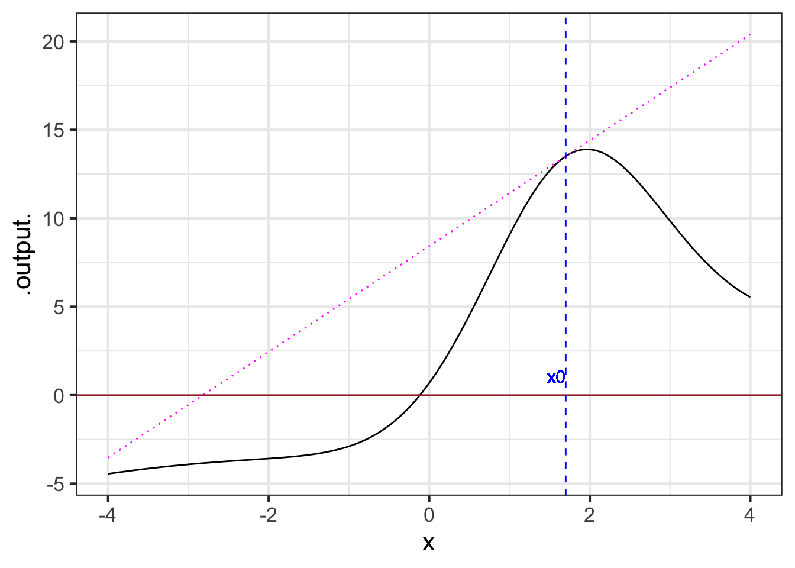

<!DOCTYPE html>
<html lang="" xml:lang="">
<head>

  <meta charset="utf-8" />
  <meta http-equiv="X-UA-Compatible" content="IE=edge" />
  <title>Chapter 27 Operations on functions | MOSAIC-Calculus.knit</title>
  <meta name="description" content="" />
  <meta name="generator" content="bookdown 0.24.1 and GitBook 2.6.7" />

  <meta property="og:title" content="Chapter 27 Operations on functions | MOSAIC-Calculus.knit" />
  <meta property="og:type" content="book" />
  
  
  
  

  <meta name="twitter:card" content="summary" />
  <meta name="twitter:title" content="Chapter 27 Operations on functions | MOSAIC-Calculus.knit" />
  
  
  


  <meta name="viewport" content="width=device-width, initial-scale=1" />
  <meta name="apple-mobile-web-app-capable" content="yes" />
  <meta name="apple-mobile-web-app-status-bar-style" content="black" />
  
  
<link rel="prev" href="block4-intro-draft.html"/>
<link rel="next" href="data-driven-functions.html"/>
<script src="libs/header-attrs-2.11/header-attrs.js"></script>
<script src="libs/jquery-3.6.0/jquery-3.6.0.min.js"></script>
<script src="https://cdn.jsdelivr.net/npm/fuse.js@6.4.6/dist/fuse.min.js"></script>
<link href="libs/gitbook-2.6.7/css/style.css" rel="stylesheet" />
<link href="libs/gitbook-2.6.7/css/plugin-table.css" rel="stylesheet" />
<link href="libs/gitbook-2.6.7/css/plugin-bookdown.css" rel="stylesheet" />
<link href="libs/gitbook-2.6.7/css/plugin-highlight.css" rel="stylesheet" />
<link href="libs/gitbook-2.6.7/css/plugin-search.css" rel="stylesheet" />
<link href="libs/gitbook-2.6.7/css/plugin-fontsettings.css" rel="stylesheet" />
<link href="libs/gitbook-2.6.7/css/plugin-clipboard.css" rel="stylesheet" />


<link href="libs/anchor-sections-1.0.1/anchor-sections.css" rel="stylesheet" />
<script src="libs/anchor-sections-1.0.1/anchor-sections.js"></script>
<script src="libs/kePrint-0.0.1/kePrint.js"></script>
<link href="libs/lightable-0.0.1/lightable.css" rel="stylesheet" />
<span class="math inline">
\(\newcommand{\line}{\text{line}}
\newcommand{\hump}{\text{hump}}
\newcommand{\sigmoid}{\text{sigmoid}}
\newcommand{\recip}{\text{recip}}
\newcommand{\diff}[1]{{\cal D}_#1}
\newcommand{\pnorm}{\text{pnorm}}
\newcommand{\dnorm}{\text{dnorm}}
\newcommand{\CC}[1]{\color{#648fff}{#1}}
\newcommand{\CE}[1]{\color{#785ef0}{#1}}
\newcommand{\CA}[1]{\color{#dc267f}{#1}}
\newcommand{\CB}[1]{\color{#fe6100}{#1}}
\newcommand{\CD}[1]{\color{#ffb000}{#1}}\)
</span>


<style type="text/css">
pre > code.sourceCode { white-space: pre; position: relative; }
pre > code.sourceCode > span { display: inline-block; line-height: 1.25; }
pre > code.sourceCode > span:empty { height: 1.2em; }
.sourceCode { overflow: visible; }
code.sourceCode > span { color: inherit; text-decoration: inherit; }
pre.sourceCode { margin: 0; }
@media screen {
div.sourceCode { overflow: auto; }
}
@media print {
pre > code.sourceCode { white-space: pre-wrap; }
pre > code.sourceCode > span { text-indent: -5em; padding-left: 5em; }
}
pre.numberSource code
  { counter-reset: source-line 0; }
pre.numberSource code > span
  { position: relative; left: -4em; counter-increment: source-line; }
pre.numberSource code > span > a:first-child::before
  { content: counter(source-line);
    position: relative; left: -1em; text-align: right; vertical-align: baseline;
    border: none; display: inline-block;
    -webkit-touch-callout: none; -webkit-user-select: none;
    -khtml-user-select: none; -moz-user-select: none;
    -ms-user-select: none; user-select: none;
    padding: 0 4px; width: 4em;
    color: #aaaaaa;
  }
pre.numberSource { margin-left: 3em; border-left: 1px solid #aaaaaa;  padding-left: 4px; }
div.sourceCode
  {   }
@media screen {
pre > code.sourceCode > span > a:first-child::before { text-decoration: underline; }
}
code span.al { color: #ff0000; font-weight: bold; } /* Alert */
code span.an { color: #60a0b0; font-weight: bold; font-style: italic; } /* Annotation */
code span.at { color: #7d9029; } /* Attribute */
code span.bn { color: #40a070; } /* BaseN */
code span.bu { } /* BuiltIn */
code span.cf { color: #007020; font-weight: bold; } /* ControlFlow */
code span.ch { color: #4070a0; } /* Char */
code span.cn { color: #880000; } /* Constant */
code span.co { color: #60a0b0; font-style: italic; } /* Comment */
code span.cv { color: #60a0b0; font-weight: bold; font-style: italic; } /* CommentVar */
code span.do { color: #ba2121; font-style: italic; } /* Documentation */
code span.dt { color: #902000; } /* DataType */
code span.dv { color: #40a070; } /* DecVal */
code span.er { color: #ff0000; font-weight: bold; } /* Error */
code span.ex { } /* Extension */
code span.fl { color: #40a070; } /* Float */
code span.fu { color: #06287e; } /* Function */
code span.im { } /* Import */
code span.in { color: #60a0b0; font-weight: bold; font-style: italic; } /* Information */
code span.kw { color: #007020; font-weight: bold; } /* Keyword */
code span.op { color: #666666; } /* Operator */
code span.ot { color: #007020; } /* Other */
code span.pp { color: #bc7a00; } /* Preprocessor */
code span.sc { color: #4070a0; } /* SpecialChar */
code span.ss { color: #bb6688; } /* SpecialString */
code span.st { color: #4070a0; } /* String */
code span.va { color: #19177c; } /* Variable */
code span.vs { color: #4070a0; } /* VerbatimString */
code span.wa { color: #60a0b0; font-weight: bold; font-style: italic; } /* Warning */
</style>


<link rel="stylesheet" href="mosaic-calc-style-copy.css" type="text/css" />
</head>

<body>


  <div class="book without-animation with-summary font-size-2 font-family-1" data-basepath=".">

    <div class="book-summary">
      <nav role="navigation">

<ul class="summary">
<li><span style="font-size: 150%;><strong><a href="../index.html">MOSAIC Calculus</a></strong></span></li>
<li><em><a>Calculus for the 21st century</a></em></li>
<li><a>Daniel Kaplan</a></li>
<hr>
<li><a href="../block-1/change.html">Block 1: Functions & quantities</a></li>
<li><a href="../block-2/change-relationships.html">Block 2: Differentiation</a></li>
<li><a href="../block-3/change-accumulation.html">Block 3: Accumulation</a></li>
<li><strong><a href="../block-4/block4-intro.html">Block 4: Manifestations</a></strong></li>

<li class="divider"></li>
<li class="chapter" data-level="" data-path="block4-intro-draft.html"><a href="block4-intro-draft.html"><i class="fa fa-check"></i>Introduction</a></li>
<li class="chapter" data-level="27" data-path="operations.html"><a href="operations.html"><i class="fa fa-check"></i><b>27</b> Operations on functions</a>
<ul>
<li class="chapter" data-level="27.1" data-path="operations.html"><a href="operations.html#task-solve"><i class="fa fa-check"></i><b>27.1</b> Task: Solve</a></li>
<li class="chapter" data-level="27.2" data-path="operations.html"><a href="operations.html#task-argmax"><i class="fa fa-check"></i><b>27.2</b> Task: Argmax</a></li>
<li class="chapter" data-level="27.3" data-path="operations.html"><a href="operations.html#task-iterate"><i class="fa fa-check"></i><b>27.3</b> Task: Iterate</a></li>
<li class="chapter" data-level="27.4" data-path="operations.html"><a href="operations.html#software-for-the-tasks"><i class="fa fa-check"></i><b>27.4</b> Software for the tasks</a></li>
<li class="chapter" data-level="27.5" data-path="operations.html"><a href="operations.html#algorithmic-techniques"><i class="fa fa-check"></i><b>27.5</b> Algorithmic techniques</a></li>
<li class="chapter" data-level="27.6" data-path="operations.html"><a href="operations.html#exercises"><i class="fa fa-check"></i><b>27.6</b> Exercises</a></li>
</ul></li>
<li class="chapter" data-level="28" data-path="data-driven-functions.html"><a href="data-driven-functions.html"><i class="fa fa-check"></i><b>28</b> Data-driven functions</a>
<ul>
<li class="chapter" data-level="28.1" data-path="data-driven-functions.html"><a href="data-driven-functions.html#generating-smooth-motion"><i class="fa fa-check"></i><b>28.1</b> Generating smooth motion</a></li>
<li class="chapter" data-level="28.2" data-path="data-driven-functions.html"><a href="data-driven-functions.html#piecewise-but-smooth"><i class="fa fa-check"></i><b>28.2</b> Piecewise but smooth</a></li>
<li class="chapter" data-level="28.3" data-path="data-driven-functions.html"><a href="data-driven-functions.html#cubic-splines"><i class="fa fa-check"></i><b>28.3</b> C<sup>2</sup> smooth functions</a></li>
<li class="chapter" data-level="28.4" data-path="data-driven-functions.html"><a href="data-driven-functions.html#bézier-splines"><i class="fa fa-check"></i><b>28.4</b> Bézier splines</a></li>
<li class="chapter" data-level="28.5" data-path="data-driven-functions.html"><a href="data-driven-functions.html#exercises-1"><i class="fa fa-check"></i><b>28.5</b> Exercises</a></li>
</ul></li>
<li class="chapter" data-level="29" data-path="opimization-and-constraint.html"><a href="opimization-and-constraint.html"><i class="fa fa-check"></i><b>29</b> Opimization and constraint</a>
<ul>
<li class="chapter" data-level="29.1" data-path="opimization-and-constraint.html"><a href="opimization-and-constraint.html#gradient-descent"><i class="fa fa-check"></i><b>29.1</b> Gradient descent</a></li>
<li class="chapter" data-level="29.2" data-path="opimization-and-constraint.html"><a href="opimization-and-constraint.html#objectives-and-constraints"><i class="fa fa-check"></i><b>29.2</b> Objectives and Constraints</a></li>
<li class="chapter" data-level="29.3" data-path="opimization-and-constraint.html"><a href="opimization-and-constraint.html#constraint-cost"><i class="fa fa-check"></i><b>29.3</b> Constraint cost</a></li>
<li class="chapter" data-level="29.4" data-path="opimization-and-constraint.html"><a href="opimization-and-constraint.html#exercises-2"><i class="fa fa-check"></i><b>29.4</b> Exercises</a></li>
</ul></li>
<li class="chapter" data-level="30" data-path="probability-and-evidence.html"><a href="probability-and-evidence.html"><i class="fa fa-check"></i><b>30</b> Probability and evidence</a>
<ul>
<li class="chapter" data-level="30.1" data-path="probability-and-evidence.html"><a href="probability-and-evidence.html#probability-density"><i class="fa fa-check"></i><b>30.1</b> Probability density</a></li>
<li class="chapter" data-level="30.2" data-path="probability-and-evidence.html"><a href="probability-and-evidence.html#three-density-functions"><i class="fa fa-check"></i><b>30.2</b> Three density functions</a></li>
<li class="chapter" data-level="30.3" data-path="probability-and-evidence.html"><a href="probability-and-evidence.html#mean-and-variance"><i class="fa fa-check"></i><b>30.3</b> Mean and variance</a></li>
<li class="chapter" data-level="30.4" data-path="probability-and-evidence.html"><a href="probability-and-evidence.html#risk-and-data"><i class="fa fa-check"></i><b>30.4</b> Risk and data</a></li>
<li class="chapter" data-level="30.5" data-path="probability-and-evidence.html"><a href="probability-and-evidence.html#exercises-3"><i class="fa fa-check"></i><b>30.5</b> Exercises</a></li>
</ul></li>
<li class="chapter" data-level="31" data-path="mechanics.html"><a href="mechanics.html"><i class="fa fa-check"></i><b>31</b> Mechanics</a>
<ul>
<li class="chapter" data-level="31.1" data-path="mechanics.html"><a href="mechanics.html#work"><i class="fa fa-check"></i><b>31.1</b> Work</a></li>
<li class="chapter" data-level="31.2" data-path="mechanics.html"><a href="mechanics.html#energy"><i class="fa fa-check"></i><b>31.2</b> Energy</a></li>
<li class="chapter" data-level="31.3" data-path="mechanics.html"><a href="mechanics.html#momentum"><i class="fa fa-check"></i><b>31.3</b> Momentum</a></li>
<li class="chapter" data-level="31.4" data-path="mechanics.html"><a href="mechanics.html#center-of-mass"><i class="fa fa-check"></i><b>31.4</b> Center of mass</a></li>
<li class="chapter" data-level="31.5" data-path="mechanics.html"><a href="mechanics.html#angular-momentum-and-torque"><i class="fa fa-check"></i><b>31.5</b> Angular momentum and torque</a></li>
<li class="chapter" data-level="31.6" data-path="mechanics.html"><a href="mechanics.html#exercises-4"><i class="fa fa-check"></i><b>31.6</b> Exercises</a></li>
</ul></li>
<li class="divider"></li>
<li><a href="../block-5/vectors.html">Block 5: Linear combinations</a></li>
<li><a href="../block-6/dynamics.html">Block 6: Dynamics</a></li>

</ul>

      </nav>
    </div>

    <div class="book-body">
      <div class="body-inner">
        <div class="book-header" role="navigation">
          <h1>
            <i class="fa fa-circle-o-notch fa-spin"></i><a href="./"></a>
          </h1>
        </div>

        <div class="page-wrapper" tabindex="-1" role="main">
          <div class="page-inner">

            <section class="normal" id="section-">
<div id="operations" class="section level1" number="1">
<h1><span class="header-section-number">Chapter 27</span> Operations on functions</h1>
<p>In Block 1, we introduced the idea of <strong><em>mathematical modeling</em></strong>, creating a representation of some aspect of the world out of mathematical “stuff.” As you know, for us the relevant “stuff” includes the concept of a function with its inputs and output, units and dimensions of quantities, frameworks such as the basic modeling functions and ways of combining functions via linear combination, composition, and multiplication.</p>
<p>When we construct functions, the symbol <span class="math inline">\(\equiv\)</span> is appropriately used to mean “is defined to be.” We have used the tradition equal sign (<span class="math inline">\(=\)</span>) but always to mean “is” or “amounts to” or “happens to equal.” For instance, we write <span class="math inline">\(\sin(\pi/2) = 1\)</span> not as a definition of the sinusoid but to identify the output corresponding to a single specific input.</p>
<p>In high-school algebra, much more emphasis was placed on <strong><em>equations</em></strong>. For instance, you might well see an equation like <span class="math display">\[{\mathbf{\text{equation:}}}\ \ \ x^2 - 6 x - 3 = 0\]</span> in a beginning algebra textbook. It pays to think a little about what such an equation means and what information it is intended to convey. In particular, how is it different from a function like <span class="math display">\[{\mathbf{\text{function:}}}\ \ \ p(x) \equiv x^2 - 6 x - 3 \ .\]</span></p>
<p>A simple equation like <span class="math inline">\(3 + 4 = 7\)</span> is a statement of fact: three plus four is indeed exactly the same as seven. But <span class="math inline">\(x^2 - 6 x - 3 = 0\)</span> is not a fact. The equality might be true or false, depending on what <span class="math inline">\(x\)</span> happens to be. In an algebra course, is really meant to be an instruction to a person:
<span class="math display">\[x^2 - 6 x - 3 = 0, \ \ {\mathbf{\text{Instruction}}}\text{: Find x.}\]</span></p>
<p>What’s meant by “find <span class="math inline">\(x\)</span>” is to determine which numerical values (if any) when substituted for <span class="math inline">\(x\)</span> in the equation will produce a true statement. This is also called <strong><em>solving for <span class="math inline">\(\mathbf x\)</span></em></strong>. Algebra courses offer a variety of solving techniques that are effective for different types of problem statements.</p>
<p>“Solving for <span class="math inline">\(x\)</span>” is an example of a <strong><em>mathematical task</em></strong>. We undertake such tasks in order to extract useful information from a mathematical object. For instance, in high-school textbook “word problems,” you translate a verbal description of a situation—typically involving canoes paddling across a flowing river—into a matching mathematical form and then, having constructed the mathematical form, you apply some mathematical task to the form in order to reveal the answer you seek.</p>
<p>In this chapter, we’re going to look at the mathematical tasks that are commonly performed on functions, that is, <strong><em>operations on functions</em></strong>. We’ll introduce you to algorithms that enable you to construct the task result without having to apply much mental work or engage puzzle-solving skills.</p>
<p>Importantly, we’ll give a name to each task. That way, confronted with a mathematical problem, you will be able to look down the short menu of common tasks to decide which one is applicable to your circumstance. Even better, once the task has a name, you can tell a computer to do it for you.</p>
<p>Here are some <a name="common-tasks">common mathematical tasks</a> that you’ve already learned about:</p>
<ol style="list-style-type: decimal">
<li>Given a function and specific values for the inputs, <strong><em>apply</em></strong> the function to the inputs to produce an output. Another name for this is to <strong><em>evaluate a function</em></strong> on inputs.</li>
<li>Given a function and the name of a with-respect-to input, construct a new function that is the derivative of the given function. The name for this task is to <strong><em>differentiate the function</em></strong>.</li>
<li>Like (2), given a function and the name of a with respect to input, <strong><em>anti-differentiate the function</em></strong>.</li>
<li>Given a function and an interval of the domain of that function, <strong><em>accumulate</em></strong> the function on that interval. This is named to <strong><em>integrate the function</em></strong> on the interval. (You may recognize that you can perform this task by breaking it down into task (3) and then applying task (1) to the result. That is, <span class="math inline">\(\int_a^b f(t) dt = F(b) - F(a)\)</span>.)</li>
</ol>
<p>In this chapter, we focus on the following operations on functions that you may not yet have mastered.</p>
<ol start="5" style="list-style-type: decimal">
<li>Given a function and an output value from the function, find values for an input (or inputs) which will generate that output value. This is the <strong><em>solving</em></strong> task. A closely related task is <strong><em>zero-finding</em></strong>, which is to find an input that will cause the function to produce the output zero.</li>
<li>Given a function and an interval of the domain, find an input value that will produce an output value that’s higher than would be produced for nearby inputs. As you might recognize, this is called finding an <strong><em>argmax</em></strong>. The problem of finding an <strong><em>argmin</em></strong> is exactly the same kind of problem, and can be solved by finding the argmax of the negative of the function.</li>
<li>Given a function and an input value, <strong><em>iterate</em></strong> the function to produce a new input that will be better than the original for some purpose.</li>
</ol>
<p>These seven tasks allow you to perform a huge variety of the important mathematical work of extracting useful information from a model. Human judgement and creativity is needed to construct the model. And judgement and experience is needed to figure out which tasks to perform and in what order. But carrying out the tasks does not require judgement, experience, or creativity. Performing the tasks requires only an algorithm and the tools to step through the algorithm. Computers are excellent for this; you just have to give them the function and whatever additional input is required (e.g. the name of a with-respect-to-variable), and then tell the computer which task it is to perform.</p>
<div id="task-solve" class="section level2" number="1.1">
<h2><span class="header-section-number">27.1</span> Task: Solve</h2>
<p>Starting materials:</p>
<ol style="list-style-type: lower-roman">
<li>a function <span class="math inline">\(f(x)\)</span>,
ii, a known output value <span class="math inline">\(v\)</span>, and</li>
<li>a candidate for a suitable input value <span class="math inline">\(\color{brown}{x_0}\)</span></li>
</ol>
<p>Ideal result from the algorithm: A new candidate <span class="math inline">\(\color{magenta}{x^\star}\)</span> such that <span class="math inline">\(f(\color{magenta}{x^\star}) = v\)</span> or, equivalently, that <span class="math display">\[\left|\strut f(\color{magenta}{x^\star}) - v \right| = 0\ .\]</span></p>
<p>Realistic result from the algorithm: The new candidate <span class="math inline">\(\color{magenta}{x^\star}\)</span> will be better than <span class="math inline">\(x_0\)</span>, that is,
<span class="math display">\[ \left|\strut f(\color{magenta}{x^\star}) - v\right|\ \  {\mathbf &lt;}\ \  \left|\strut f(\color{brown}{x_0}) - v\right|\]</span>
Easy case: When <span class="math inline">\(f(x)\)</span> is a straight-line function, that is <span class="math inline">\(f(x) \equiv \line(x) = a x + b\)</span>, the solution can be found by simple arithmetic:</p>
<p><span class="math display">\[a x^\star + b - v = 0 \ \ \implies \ \ \ x^\star = \frac{b-v}{a}\]</span>
<strong>Approximation strategy</strong>: If <span class="math inline">\(f(x)\)</span> is not a straight-line function, construct the tangent-line approximation to <span class="math inline">\(f()\)</span> that’s value near <span class="math inline">\(x_0\)</span>. This approximation function, which we’ll call <span class="math inline">\(\widehat{f}(x)\)</span> can be written in terms of <span class="math inline">\(f(x_0)\)</span> and <span class="math inline">\(\partial_x f(x_0)\)</span> in the same way we’ve been doing since Block 2.
<span class="math display">\[\widehat{f}(x) \equiv f(x_0) + \partial_x f(x_0) \left[\strut x - x_0 \right]\ .\]</span></p>
<p>Because <span class="math inline">\(\widehat{f}(x)\)</span> is a straight-line function, it’s easy to find an input that will generate exactly the desired output value <span class="math inline">\(v\)</span>, that is, a value for <span class="math inline">\(x\)</span> such that <span class="math inline">\(\widehat{f}(x) = v\)</span>.
This is a matter of solving algebraically for <span class="math inline">\(x\)</span> in the equation
<span class="math display">\[f(x_0) + \partial_x f(x_0) \left[\strut x - x_0 \right] = v\ ,\]</span>
We use <span class="math inline">\(x_1\)</span> to denote that exact solution to the approximate problem:</p>
<p><span class="math display" id="eq:better-guess">\[\begin{equation}
x_1 = x_0 + \frac{v-f(x_0)}{\partial_x f(x_0)}
\tag{27.1}
\end{equation}\]</span></p>
<p>Although <span class="math inline">\(x_1\)</span> is an exact solution to the approximate problem, all we can hope is that it will be an approximate solution to the actual problem, which may involve a nonlinear function <span class="math inline">\(f(x)\)</span>. In particular, we want <span class="math inline">\(x_1\)</span> to be a better guess than <span class="math inline">\(x_0\)</span>:
<span class="math display">\[\|f(x_1) - v\| \underbrace{&lt;\,}_\text{We hope!} \|f(x_0) - v\|\]</span></p>
<p>This (hopefully) improved solution <span class="math inline">\(x_1\)</span> can become the starting guess for a new round of improvement
<span class="math display" id="eq:better-guess2">\[\begin{equation}
x_2 = x_1 + \frac{v-f(x_1)}{\partial_x f(x_1)}
\tag{27.2}
\end{equation}\]</span></p>
<p>Equations <a href="operations.html#eq:better-guess">(27.1)</a> and <a href="operations.html#eq:better-guess2">(27.2)</a> involve evaluating a function, which we might call better(), at the current guess: <span class="math inline">\(x_0\)</span> to start and then <span class="math inline">\(x_1\)</span>.
<span class="math display">\[\text{better}(z) \equiv z + \frac{v-f(z)}{\partial_x f(z)}\ .\]</span></p>
<p>The form of better() is called a <strong><em>Newton step</em></strong>. The idea is to start with an initial guess <span class="math inline">\(x_0\)</span> and then take successive steps to get closer and closer (hopefully!) to the actual answer <span class="math inline">\(x^\star\)</span>:</p>
<p><span class="math display">\[x_1 = \text{better}(x_0)\\
x_2 = \text{better}(x_1)\\
x_3 = \text{better}(x_2)\\
\vdots\\
x_i = \text{better}(x_{i-1})\\\ \\
\text{until eventually}\ \|f(x_i) - v\|\ \text{is practically zero.}\]</span></p>
<div class="figure" style="text-align: center"><span style="display:block;" id="fig:newton-step"></span>

<p class="caption">
Figure 27.1: A Newton-step calculation seen graphically. The brown function is approximated as a straight-line function at the initial point <span class="math inline">\(x_0\)</span>. The resulting <span class="math inline">\(x_1\)</span> is where that straight line crosses the value <span class="math inline">\(v\)</span> on the output scale. Here, <span class="math inline">\(x_1\)</span> is a little to the left of the actual place where <span class="math inline">\(f()\)</span> crosses <span class="math inline">\(v\)</span>. The Newton step produced an improved guess, since <span class="math inline">\(\|x_1 - x^\star\|\)</span> is smaller than <span class="math inline">\(\| x_0 - x^\star\|\)</span>.
</p>
</div>
<div class="example">
<p><span id="exm:unlabeled-div-1" class="example"><strong>Example 27.1  </strong></span>Construct the Newton-step function for the function <span class="math display">\[f(x) \equiv x^2 - x\]</span> to find <span class="math inline">\(x^\star\)</span> such that <span class="math inline">\(f(x^\star) = 4\)</span>.</p>
<p>Since <span class="math inline">\(\partial_x f(x) = 2 x - 1\)</span>, the Newton-step function will be:
<span class="math display">\[\text{better}(z) = z - \frac{z^2 - z - 4}{2 z - 1}\]</span>
We’ll pick <span class="math inline">\(x_0 = 2\)</span> as a starting guess:</p>
<p><span class="math display">\[\text{better}(x_0 = 2) = 2.66666 \longrightarrow x_1 : f(x_1) = 4.444444\\
\text{better}(x_1 = 2.66666) = 2.56410 \longrightarrow x_2 : f(x_2) = 4.010419\\
\text{better}(x_2 = 2.56410) = 2.56155  \longrightarrow x_3  : f(x_3) = 4.000001\]</span></p>
<p>The output <span class="math inline">\(f(x_3)\)</span> is practically the desired <span class="math inline">\(v=4\)</span>: We have our answer: <span class="math inline">\(x^\star = 2.56155\)</span>!</p>
<p>Just the first Newton step, producing <span class="math inline">\(x_1 = 2.666666\)</span> did not completely solve the problem. You can think of the problem like the task of digging a well. You need to start with the first shovelful. Then take another and another and … until you have your well.</p>
</div>
<p>Newton’s method involves creating a custom <code>better()</code> function for each new problem. But we can create the functions automatically:</p>
<div class="sourceCode" id="cb1"><pre class="sourceCode r"><code class="sourceCode r"><span id="cb1-1"><a href="operations.html#cb1-1" aria-hidden="true" tabindex="-1"></a>make_better_fun <span class="ot">&lt;-</span> <span class="cf">function</span>(tilde, v) {</span>
<span id="cb1-2"><a href="operations.html#cb1-2" aria-hidden="true" tabindex="-1"></a>  f <span class="ot">&lt;-</span> <span class="fu">makeFun</span>(tilde)</span>
<span id="cb1-3"><a href="operations.html#cb1-3" aria-hidden="true" tabindex="-1"></a>  df <span class="ot">&lt;-</span> <span class="fu">D</span>(tilde)</span>
<span id="cb1-4"><a href="operations.html#cb1-4" aria-hidden="true" tabindex="-1"></a>  better <span class="ot">&lt;-</span> <span class="cf">function</span>(z) {z <span class="sc">+</span> (v<span class="sc">-</span><span class="fu">f</span>(z))<span class="sc">/</span><span class="fu">df</span>(z)}</span>
<span id="cb1-5"><a href="operations.html#cb1-5" aria-hidden="true" tabindex="-1"></a></span>
<span id="cb1-6"><a href="operations.html#cb1-6" aria-hidden="true" tabindex="-1"></a>  <span class="fu">return</span>(better)</span>
<span id="cb1-7"><a href="operations.html#cb1-7" aria-hidden="true" tabindex="-1"></a>}</span></code></pre></div>
<p>Let’s test it out:</p>
<div class="sourceCode" id="cb2"><pre class="sourceCode r"><code class="sourceCode r"><span id="cb2-1"><a href="operations.html#cb2-1" aria-hidden="true" tabindex="-1"></a>f <span class="ot">&lt;-</span> <span class="fu">makeFun</span>(x<span class="sc">^</span><span class="dv">2</span> <span class="sc">-</span> x <span class="sc">~</span> x)</span>
<span id="cb2-2"><a href="operations.html#cb2-2" aria-hidden="true" tabindex="-1"></a>better <span class="ot">&lt;-</span> <span class="fu">make_better_fun</span>(<span class="fu">f</span>(x) <span class="sc">~</span> x, <span class="at">v=</span><span class="dv">4</span>)</span>
<span id="cb2-3"><a href="operations.html#cb2-3" aria-hidden="true" tabindex="-1"></a><span class="co"># Take three steps starting at x0=3</span></span>
<span id="cb2-4"><a href="operations.html#cb2-4" aria-hidden="true" tabindex="-1"></a>xstar <span class="ot">&lt;-</span> <span class="dv">3</span> <span class="sc">%&gt;%</span> <span class="fu">better</span>() <span class="sc">%&gt;%</span> <span class="fu">better</span>() <span class="sc">%&gt;%</span> <span class="fu">better</span>()</span>
<span id="cb2-5"><a href="operations.html#cb2-5" aria-hidden="true" tabindex="-1"></a><span class="fu">f</span>(xstar)</span></code></pre></div>
<pre><code>## [1] 4</code></pre>
<p>The process we’ve presented here is not guaranteed to work. By exploring cases where it fails, <strong><em>computational mathematicians</em></strong><a href="#fn1" class="footnote-ref" id="fnref1"><sup>1</sup></a> have developed strategies for increasing the range of situations for which it works.</p>
<div class="rmosaic">
<p>The R/mosaic function <code>Zeros()</code> incorporates several good practices, including attempting to make a good guess for <span class="math inline">\(x_0\)</span> automatically. To use <code>Zeros()</code>, you construct a function <span class="math inline">\(g(x) \equiv f(x) - v\)</span>, and <code>Zeros()</code> will produce a good <span class="math inline">\(x^\star\)</span> or, even better, a set of them.</p>
<p><code>Zeros()</code> returns a data frame with two colums. The first gives input values that correspond to an output near zero. The second column, named <code>.output.</code> calculates the output (and will be near zero). Illustrating with a previous example:</p>
<div class="sourceCode" id="cb4"><pre class="sourceCode r"><code class="sourceCode r"><span id="cb4-1"><a href="operations.html#cb4-1" aria-hidden="true" tabindex="-1"></a>g <span class="ot">&lt;-</span> <span class="fu">makeFun</span>(x<span class="sc">^</span><span class="dv">3</span> <span class="sc">-</span> <span class="dv">6</span> <span class="sc">~</span> x)</span>
<span id="cb4-2"><a href="operations.html#cb4-2" aria-hidden="true" tabindex="-1"></a>xstar <span class="ot">&lt;-</span> <span class="fu">Zeros</span>(<span class="fu">g</span>(x) <span class="sc">~</span> x, <span class="fu">domain</span>(<span class="at">x=</span><span class="fu">c</span>(<span class="dv">1</span>,<span class="dv">6</span>)))</span></code></pre></div>
<p>
<code class='sourceCode'  style='width:40%;overflow:auto;float:left;'>xstar </code>       <code class='sourceCode' style="color: blue;">1.8171</code>
</p>
,
<p>
<code class='sourceCode'  style='width:40%;overflow:auto;float:left;'>xstar </code>       <code class='sourceCode' style="color: blue;">2e-04</code>
</p>
<p>How well did this work?</p>
<p>
<code class='sourceCode'  style='width:50%;overflow:auto;float:left;'>with(xstar, g(x)) # should be zero</code>       <code class='sourceCode' style="color: blue;">2e-04</code>
</p>
</div>
</div>
<div id="task-argmax" class="section level2" number="1.2">
<h2><span class="header-section-number">27.2</span> Task: Argmax</h2>
<p>The task of finding the input value that corresponds to a local maximum is called <strong><em>argmax finding</em></strong>. We don’t need to know the value of the local maximum to solve this problem. Instead, we designate a locale by specifying an initial guess <span class="math inline">\(x_0\)</span> for the argmax. For argmax finding of an objective function <span class="math inline">\(f(x)\)</span>, we seek a <span class="math inline">\(x^\star\)</span> such that <span class="math inline">\(f(x^\star) &gt; f(x_0)\)</span>.</p>
<p>To accomplish this, we’ll approximate <span class="math inline">\(f(x)\)</span> with a low-order polynomial, as we so often do. We’ll call the approximation <span class="math inline">\(\widehat{f(x)}\)</span>. In the solving task, the approximation was with a first-order polynomial. But first-order polynomials—that is, straight-line functions—don’t have a local argmax. We need to use a second-order polynomial. Easy enough: construct the second-order <strong><em>Taylor polynomial</em></strong> around <span class="math inline">\(x_0\)</span>:</p>
<p><span class="math display">\[\widehat{f(x)} \equiv f(x_0) + f&#39;(x_0) \left[x - x_0\right] + \frac{1}{2} f&#39;&#39;(x_0) \left[x-x_0\right]^2\]</span>
Remember that <span class="math inline">\(f(x_0)\)</span>, <span class="math inline">\(f&#39;(x_0)\)</span> and <span class="math inline">\(f&#39;&#39;(x_0)\)</span> are all fixed quantities; they don’t depend on <span class="math inline">\(x\)</span>.</p>
<p>To find the argmax of <span class="math inline">\(\widehat{f(x)}\)</span>, differentiate it with respect to <span class="math inline">\(x\)</span> and find the zero of the derivative:
<span class="math display">\[\partial_x \widehat{f(x)} = f&#39;(x_0) \underbrace{\partial_x\left[x - x_0\right]}_{{\large\strut}1} +
\frac{1}{2} f&#39;&#39;(x_0) \underbrace{\partial_x\left[x-x_0\right]^2}_{2 \left[x - x_0\right]} = 0
\]</span></p>
<p>Giving <span class="math display">\[f&#39;(x_0) + f&#39;&#39;(x_0) \left[x - x_0\right] = 0\ .\]</span>
As with all solving-task problems, we seek <span class="math inline">\(x=x^\star\)</span> that will make the above statement true. This is
<span class="math display">\[x^\star = x_0 - \frac{f&#39;(x_0)}{f&#39;&#39;(x_0)}\ .\]</span>
In other words, our new guess <span class="math inline">\(x^\star\)</span> will be a step away from the old guess <span class="math inline">\(x_0\)</span>, with the step being <span class="math inline">\(-f&#39;(x_0) / f&#39;&#39;(x_0)\)</span>.</p>
<div class="rmosaic">
<p>Use the R/mosaic <code>argM()</code> function to find argmaxes and argmins. Like other R/mosaic calculus functions, the first argument is a tilde expression defining the objective function. The second argument is the domain to search.</p>
<p>To illustrate, the following code creates a randomly shaped function (displayed in Figure <a href="operations.html#fig:argm-ex1">27.2</a>) and calls <code>argM()</code> to generate the argmaxes and argmins.</p>
<div class="sourceCode" id="cb5"><pre class="sourceCode r"><code class="sourceCode r"><span id="cb5-1"><a href="operations.html#cb5-1" aria-hidden="true" tabindex="-1"></a>f <span class="ot">&lt;-</span> <span class="fu">rfun</span>(<span class="sc">~</span> x, <span class="dv">3215</span>)</span>
<span id="cb5-2"><a href="operations.html#cb5-2" aria-hidden="true" tabindex="-1"></a>Xstar <span class="ot">&lt;-</span> <span class="fu">argM</span>(<span class="fu">f</span>(x) <span class="sc">~</span> x, <span class="fu">domain</span>(<span class="at">x =</span> <span class="sc">-</span><span class="dv">5</span><span class="sc">:</span><span class="dv">5</span>))</span>
<span id="cb5-3"><a href="operations.html#cb5-3" aria-hidden="true" tabindex="-1"></a>Xstar </span></code></pre></div>
<table class=" lightable-classic" style="font-family: Courier New; width: auto !important; margin-left: auto; margin-right: auto;">
<thead>
<tr>
<th style="text-align:right;">
x
</th>
<th style="text-align:right;">
.output.
</th>
<th style="text-align:right;">
concavity
</th>
</tr>
</thead>
<tbody>
<tr>
<td style="text-align:right;">
1.028013
</td>
<td style="text-align:right;">
-26.52652
</td>
<td style="text-align:right;">
1
</td>
</tr>
<tr>
<td style="text-align:right;">
-2.950761
</td>
<td style="text-align:right;">
3.79984
</td>
<td style="text-align:right;">
-1
</td>
</tr>
</tbody>
</table>
<div class="sourceCode" id="cb6"><pre class="sourceCode r"><code class="sourceCode r"><span id="cb6-1"><a href="operations.html#cb6-1" aria-hidden="true" tabindex="-1"></a><span class="fu">slice_plot</span>(<span class="fu">f</span>(x) <span class="sc">~</span> x, <span class="fu">domain</span>(<span class="at">x=</span><span class="sc">-</span><span class="dv">5</span><span class="sc">:</span><span class="dv">5</span>)) <span class="sc">%&gt;%</span></span>
<span id="cb6-2"><a href="operations.html#cb6-2" aria-hidden="true" tabindex="-1"></a>  <span class="fu">gf_point</span>(.output. <span class="sc">~</span> x, <span class="at">data =</span> Xstar, </span>
<span id="cb6-3"><a href="operations.html#cb6-3" aria-hidden="true" tabindex="-1"></a>           <span class="at">color=</span><span class="st">&quot;magenta&quot;</span>, <span class="at">size=</span><span class="dv">4</span>, <span class="at">alpha=</span><span class="fl">0.5</span>) </span></code></pre></div>
<div class="figure" style="text-align: center"><span style="display:block;" id="fig:argm-ex1"></span>

<p class="caption">
Figure 27.2: Illustrating the use of <code>simple_argM()</code> to find argmaxes and argmins.
</p>
</div>
<p>Notice that <code>simple_argM()</code> identified both a local maximum and a local minimum, that is, one argmax and one argmin. Visually, it’s easy to tell which one is which. In terms of the data frame returned by <code>simple_argM()</code>, the sign of the concavity does the identification for you: positive concavity points to an argmin, negative concavity to an argmax. The name <code>argM()</code>, of course, refers to this versatility of finding both argmins and argmaxes.</p>
</div>
</div>
<div id="task-iterate" class="section level2" number="1.3">
<h2><span class="header-section-number">27.3</span> Task: Iterate</h2>
<p>In everyday language, to <strong><em>iterate</em></strong> means simply to repeat: to do something over and over again. In mathematics and in computing, “iterate” has a more specific meaning: to repeatedly perform an operation, each time taking the output from the previous round as the input to the current round.</p>
<p>For our purposes, it suffices to define iteration in terms of the use of a function <span class="math inline">\(g(x)\)</span>. The function must be such that the output of the function can be used as an input to the function; the output must be the same kind of thing as the input. The iteration starts with a specific value for the input. We’ll call this value <span class="math inline">\(x_0\)</span>. Iteration then means simply to compose the function with itself starting with <span class="math inline">\(x_0\)</span> as the initial input. Here, for instance, is a four-step iteration:
<span class="math display">\[g(g(g(g(x_0))))\]</span>
Or, you might choose to iterate for ten steps:
<span class="math display">\[g(g(g(g(g(g(g(g(g(g(x_0))))))))))\]</span>
However many iteration steps you take, the output from the final step is what you work with.</p>
<p>Iteration is useful when you have constructed <span class="math inline">\(g()\)</span> to correspond to a mathematical task you need to perform, especially the solve-task or the argmax-task. <span class="math inline">\(g()\)</span> should be made so that the output is a better answer than the input.</p>
<p>To illustrate, consider the solve-task, when we are trying to find an input value to a given function that will produce an output of some desired level, which we’ll call <span class="math inline">\(v\)</span>. Earlier, we developed the idea of a Newton step for solving a function <span class="math inline">\(f()\)</span>:
<span class="math display">\[g(x) \equiv \underbrace{x}_{\text{starting value}} + \underbrace{\frac{v - f(x)}{f&#39;(x)}}_{\text{Newton step}}\]</span>
The output of <span class="math inline">\(g()\)</span> is designed to be better than the input. The idea here is to use the derivative of <span class="math inline">\(f()\)</span> in order to tweak an initial guess for the solution to be a little better. A Newton step is actually a rather aggressive proposal for improving the starting value. Like many forms of aggression, it can sometimes get you exactly the opposite of what you sought. So in practice, it may be better to take only part of a Newton step.</p>
<p>Here is a function that creates another function that gives the Newton step for a specified <span class="math inline">\(f()\)</span> and <span class="math inline">\(v\)</span>:</p>
<div class="sourceCode" id="cb7"><pre class="sourceCode r"><code class="sourceCode r"><span id="cb7-1"><a href="operations.html#cb7-1" aria-hidden="true" tabindex="-1"></a>NewtonStepFun <span class="ot">&lt;-</span> <span class="cf">function</span>(tilde, v) {</span>
<span id="cb7-2"><a href="operations.html#cb7-2" aria-hidden="true" tabindex="-1"></a>  f <span class="ot">&lt;-</span> <span class="fu">makeFun</span>(tilde)</span>
<span id="cb7-3"><a href="operations.html#cb7-3" aria-hidden="true" tabindex="-1"></a>  fprime <span class="ot">&lt;-</span> <span class="fu">D</span>(tilde)</span>
<span id="cb7-4"><a href="operations.html#cb7-4" aria-hidden="true" tabindex="-1"></a>  <span class="co"># create a new function that calculates the Newton step for </span></span>
<span id="cb7-5"><a href="operations.html#cb7-5" aria-hidden="true" tabindex="-1"></a>  <span class="co"># this f() and this v, at a specified input x.</span></span>
<span id="cb7-6"><a href="operations.html#cb7-6" aria-hidden="true" tabindex="-1"></a>  <span class="cf">function</span>(x) {</span>
<span id="cb7-7"><a href="operations.html#cb7-7" aria-hidden="true" tabindex="-1"></a>    (v <span class="sc">-</span> <span class="fu">f</span>(x))<span class="sc">/</span><span class="fu">fprime</span>(x)</span>
<span id="cb7-8"><a href="operations.html#cb7-8" aria-hidden="true" tabindex="-1"></a>  }</span>
<span id="cb7-9"><a href="operations.html#cb7-9" aria-hidden="true" tabindex="-1"></a>}</span></code></pre></div>
To illustrate, let’s make an example function <span class="math inline">\(f(x)\equiv \left[x^2 - 3x\right] \left[1.3 + \pnorm(x)\right]\)</span> (Figure @ref(fig:nstep-example1}).
<div class="figure" style="text-align: center"><span style="display:block;" id="fig:nstep-example1"></span>

<p class="caption">
Figure 27.3: An example function <span class="math inline">\(f(x)\)</span> which we seek to solve for an output of 5.
</p>
</div>
<p>We seek to solve <span class="math inline">\(f()\)</span> for an output of 5, that is, we are looking for an input <span class="math inline">\(x^\star\)</span> where <span class="math inline">\(f(x^\star) = 5\)</span>.</p>
<p>You can see the two solutions in Figure <a href="operations.html#fig:nstep-example1">27.3</a>: for an input near <span class="math inline">\(x=-1\)</span> the output is close to 5, as it is for an input of <span class="math inline">\(x=3.5\)</span>.</p>
<p>Supposed you were given an initial guess <span class="math inline">\(x_0 = -2\)</span>. You can see from the graph that a step of about length 1 to the right will bring you close to where the output of the function will be 5. Likewise, for an initial guess of <span class="math inline">\(x_0 = 4\)</span>, you would want to take a step to the left of length about 0.5. That’s what a Newton step is supposed to do, bring you closer to the correct answer. Let’s construct a function that gives us the Newton step for any starting point <span class="math inline">\(x\)</span>, and test it out</p>
<div class="sourceCode" id="cb8"><pre class="sourceCode r"><code class="sourceCode r"><span id="cb8-1"><a href="operations.html#cb8-1" aria-hidden="true" tabindex="-1"></a>step_for_f <span class="ot">&lt;-</span> </span>
<span id="cb8-2"><a href="operations.html#cb8-2" aria-hidden="true" tabindex="-1"></a>  <span class="fu">NewtonStepFun</span>(<span class="fu">f</span>(x) <span class="sc">~</span> x, <span class="at">v =</span> <span class="dv">5</span>)</span></code></pre></div>
<p>
<code class='sourceCode'  style='width:50%;overflow:auto;float:left;'>step_for_f(-2) # should be about + 1</code>       <code class='sourceCode' style="color: blue;">0.9436</code>
</p>
<p>
<code class='sourceCode'  style='width:50%;overflow:auto;float:left;'>step_for_f(4) # should be about - 0.5</code>       <code class='sourceCode' style="color: blue;">-0.3652</code>
</p>
<p>This is a good match to the two crossings of <span class="math inline">\(v=5\)</span> in Figure <a href="operations.html#fig:nstep-example1">27.3</a></p>
<p>Now that we have an expression for the step, we package it up into the function <span class="math inline">\(g()\)</span> to be used for the iteration and then iterate <span class="math inline">\(g()\)</span> from a starting guess.</p>
<div class="sourceCode" id="cb9"><pre class="sourceCode r"><code class="sourceCode r"><span id="cb9-1"><a href="operations.html#cb9-1" aria-hidden="true" tabindex="-1"></a>g <span class="ot">&lt;-</span> <span class="cf">function</span>(x) x <span class="sc">+</span> <span class="fu">step_for_f</span>(x)</span></code></pre></div>
<p>
<code class='sourceCode'  style='width:40%;overflow:auto;float:left;'>g(-2) </code>       <code class='sourceCode' style="color: blue;">-1.0564</code>
</p>
<p>
<code class='sourceCode'  style='width:40%;overflow:auto;float:left;'>g(g(-2)) </code>       <code class='sourceCode' style="color: blue;">-0.8702</code>
</p>
<p>
<code class='sourceCode'  style='width:40%;overflow:auto;float:left;'>g(g(g(-2))) </code>       <code class='sourceCode' style="color: blue;">-0.8661</code>
</p>
<p>
<code class='sourceCode'  style='width:40%;overflow:auto;float:left;'>g(g(g(g(-2)))) </code>       <code class='sourceCode' style="color: blue;">-0.8661</code>
</p>
<p>
<code class='sourceCode'  style='width:40%;overflow:auto;float:left;'>g(g(g(g(g(-2))))) </code>       <code class='sourceCode' style="color: blue;">-0.8661</code>
</p>
<p>The first iteration brought us from the <span class="math inline">\(x_0 = -2\)</span> starting point a little closer to the solution. A double iteration brought us further to the right. the successive iterations show little or now change from the output to the input, a good sign that we’ve done enough work and can declare ourselves done.</p>
<p>Of course, you always want to make sure that the answer gotten, <span class="math inline">\(x^\star = -0.8661\)</span> is right. For this, we compute <span class="math inline">\(f(x^\star)\)</span>,</p>
<p>
<code class='sourceCode'  style='width:40%;overflow:auto;float:left;'>f(-0.8661108) # should be 5</code>       <code class='sourceCode' style="color: blue;">5</code>
</p>
<p>Other than the exercises in this chapter, you will not have much need in this course to build your own functions for iterative improvement. But it is the mathematical technology behind the operators that perform the solving-task and the argmax-task.</p>
</div>
<div id="software-for-the-tasks" class="section level2" number="1.4">
<h2><span class="header-section-number">27.4</span> Software for the tasks</h2>
<p>Evaluation of a function—<a href="#common-tasks">number one in the list at the head of this chapter</a>—is so central to the use of computer languages generally that every language provides a direct means for doing so. In R, as you know, the evaluation syntax involves following the name of the functions by a pair of parentheses, placing in those parenthesis the values for the various arguments to the function. Example: <code>log(5)</code></p>
<p>The other six operations on functions listed above, there is one (or sometimes more) specific R/mosaic functions. Every one of them takes, as a first argument, a <strong><em>tilde expression</em></strong> describing the function on which the operation is to be formed; on the left side is a formula for the function (which can be in terms of other, previously defined functions), on the right side is the with-respect-to variable.</p>
<ol start="2" style="list-style-type: decimal">
<li>Differentiate <code>D()</code>. Returns a <strong><em>function</em></strong>.</li>
<li>Anti-differentiate <code>antiD()</code>. Returns a <strong><em>function</em></strong>.</li>
<li>Integrate: <code>Integrate()</code>. Returns a <strong><em>number</em></strong>.</li>
<li>Solve <code>Zeros()</code>. Returns a <strong><em>data frame</em></strong> with one row for each solution found.</li>
<li>Argmax <code>argM()</code> Finds one argmax and one argmin in the domain. <code>local_argM()</code> looks for all the local argmaxes and argmins. Returns a <strong><em>data frame</em></strong> with one row for each argmax or argmin found.</li>
<li>Iterate <code>Iterate()</code>. Returns a data frame with the value of the initial input and the output after each iteration.</li>
</ol>
<p>Each of operations 4-6 involves the specification of a <strong><em>domain</em></strong>. For <code>Integrate()</code>, this is, naturally, the domain of integration: the upper and lower bounds of the integral</p>
<p>For <code>Zeros()</code> and <code>argM()</code> the domain specifies where to search for the answer. <code>Iterate()</code> is slightly different. After the tilde expression comes an initial value <span class="math inline">\(x_0\)</span> and then <code>n=</code> which you use to set the number of times to iterate.</p>
<p>Another two R/mosaic functions that you frequently use generate graphics.</p>
<ol start="8" style="list-style-type: decimal">
<li><code>slice_plot()</code></li>
<li><code>contour_plot()</code></li>
</ol>
<p>These always take two main arguments: a tilde expression describing the function to be graphed and a plotting domain.</p>
<p>Finally, there is one function for plotting variables from data frames:</p>
<ol start="10" style="list-style-type: decimal">
<li><code>gf_point()</code>. Again, the first argument is a tilde expression specifying two of the data frame’s variables: the variable on the left side will be assigned to the vertical axis, the variable on the right side to the horizontal axis.</li>
</ol>
</div>
<div id="algorithmic-techniques" class="section level2" number="1.5">
<h2><span class="header-section-number">27.5</span> Algorithmic techniques</h2>
<p>The key steps in optimization are setting up the objective function(s) and setting constraints as needed to represent the problem at hand. There are many ways to perform the work to extract the argmax once the objective function and constraints are set.</p>
<p>Understandably, calculus textbooks tend to emphasize techniques based on finding an input where the derivative of the objective function is zero. For problems involving multiple inputs, the task is to find an input where the <strong>gradient</strong> vector is zero.</p>
<p>Contemporary work often involves problems with tens, hundreds, thousands, or even millions of inputs. Even in such large problems, the mechanics of finding the corresponding gradient vector are straightforward. Searching through a high-dimensional space, however, is not generally a task that can be accomplished using calculus tools. Instead, starting in the 1940s, great creativity has been applied to develop algorithms with names like <strong>linear programming</strong>, <strong>quadratic programming</strong>, <strong>dynamic programming</strong>, etc. many of which are based on ideas from linear algebra such as the <code>qr.solve()</code> algorithm for solving the target problem, or ideas from statistics and statistical physics that incorporate randomness as an essential component. An entire field, <strong>operations research</strong>, focuses on setting up and solving such problems. Building appropriate algorithms requires deep understanding of several areas of mathematics. But using the methods is mainly a matter of knowing how to set up the problem and communicate the objective function, constraints, etc. to a computer.</p>
<p>Purely as an example, let’s examine the operation of an early algorithmic optimization method: <a href="https://en.wikipedia.org/wiki/Nelder%E2%80%93Mead_method">Nelder-Mead</a>, dating from the mid-1960s. (There are better, faster methods now, but they are harder to understand.)</p>
<p>Nelder-Mead is designed to search for maxima of objective functions with <span class="math inline">\(n\)</span> inputs. The video shows an example with <span class="math inline">\(n=2\)</span> in the domain of a contour plot of the objective function. Of course, you can simply scan the contour plot by eye to find the maxima and minima. The point here is to demonstrate the Nelder-Mead algorithm.</p>
<p>Start by selecting <span class="math inline">\(n+1\)</span> points on the domain that are not colinear. When <span class="math inline">\(n=2\)</span>, the <span class="math inline">\(2+1\)</span> points are the vertices of a triangle. The set of points defines a <strong>simplex</strong>, which you can think of as a region of the domain that can be fenced off by connecting the vertices.</p>
<p>Evaluate the objective function at the vertices of the simplex. One of the vertices will have the lowest score for the output of the objective. From that vertex, project a line through the midpoint of the fence segment defined by the other <span class="math inline">\(n\)</span> vertices. In the video, this is drawn using dashes. Then try a handful of points along that line, indicated by the colored dots in the video. One of these will have a higher score for the objective function than the vertex used to define the line. Replace that vertex with the new, higher-scoring point. Now you have another simplex and can repeat the process. The actual algorithm has additional rules to handle special cases, but the gist of the algorithm is simple.</p>
<iframe width="560" height="315" src="https://www.youtube.com/embed/j2gcuRVbwR0" title="YouTube video player" frameborder="0" allow="accelerometer; autoplay; clipboard-write; encrypted-media; gyroscope; picture-in-picture" allowfullscreen>
</iframe>
</div>
<div id="exercises" class="section level2" number="1.6">
<h2><span class="header-section-number">27.6</span> Exercises</h2>
<details>
<summary>
<strong>Exercise XX.XX</strong>: <span><a name="File: Exercises/aspen-dig-ship.Rmd" href="#THpUtP"></a><span style="color: red; font-size: 9pt;">THpUtP</red></span>
</summary>
<p>Create a function, which iterated sufficiently from a starting guess, will implement Newton’s method to calculate <span class="math inline">\(\sqrt{10}\)</span>.</p>
<p><strong>Question A</strong> Which of these functions is appropriate to use in Newton’s method for calculating <span class="math inline">\(\sqrt{10}\)</span>?</p>
<ol style="list-style-type: lower-roman">
<li><span class="Zchoice"><span class="math inline">\(f(x) \equiv x^2 - 10\)</span><span class="mcanswer">Good. This is easy to calculate and has output zero at $x=.</span></span><br />
</li>
<li><span class="Zchoice"><span class="math inline">\(f(x) \equiv x - \sqrt{10}\)</span>+<span class="mcanswer">︎✘ The function has a zero at <span class="math inline">\(x=\sqrt{10}\)</span> but in order to set up the function you would already have to know the value of <span class="math inline">\(\sqrt{10}\)</span>.</span></span><br />
</li>
<li><span class="Zchoice"><span class="math inline">\(f(x) \equiv (x - 10)^2\)</span><span class="mcanswer">︎✘ This function is easy to compute but does not have a zero at <span class="math inline">\(x=\sqrt{10}\)</span>.</span></span></li>
</ol>
<p>Now you are going to translate <span class="math inline">\(f(x)\)</span> into a function, when iterated from some starting guess <span class="math inline">\(x_0\)</span>, will tend toward a zero of <span class="math inline">\(f(x)\)</span>. The function will have the form <span class="math display">\[N(x) \equiv x - \frac{f(x)}{f&#39;(x)}\ .\]</span></p>
<p><strong>Question B</strong> What is the function <span class="math inline">\(f&#39;(x)\)</span> for the <span class="math inline">\(\sqrt{10}\)</span> problem?</p>
<ol style="list-style-type: lower-roman">
<li><span class="Zchoice"><span class="math inline">\(2x - 10\)</span><span class="mcanswer">︎✘ </span></span><br />
</li>
<li><span class="Zchoice"><span class="math inline">\(2x\)</span><span class="mcanswer">Excellent! This isn’t <span class="math inline">\(\partial_x \left[x^2 - 10\right]\)</span>.</span></span><br />
</li>
<li><span class="Zchoice">$rac{1}{3} x^3 + 10 x + C$<span class="mcanswer">︎✘ You’re anti-differentiating <span class="math inline">\(f(x)\)</span>. You’re supposed to be differentiating it.</span></span><br />
</li>
<li><span class="Zchoice"><span class="math inline">\(x\)</span><span class="mcanswer">︎✘ This isn’t <span class="math inline">\(\partial_x \left[x^2 - 10\right]\)</span>.</span></span></li>
</ol>
<p><strong>Question C</strong> Which of these is the correct form for the Newtons-method iterator <span class="math inline">\(N(x) \equiv x - \frac{f(x)}{f&#39;(x)}\)</span>?</p>
<ol style="list-style-type: lower-roman">
<li><span class="Zchoice"><span class="math inline">\(N(x) \equiv x - rac{x^2 - 10}{2 x}\)</span><span class="mcanswer">Correct. </span></span><br />
</li>
<li><span class="Zchoice"><span class="math inline">\(N(x) \equiv x + rac{x^2 - 10}{2 x}\)</span><span class="mcanswer">︎✘ </span></span><br />
</li>
<li><span class="Zchoice"><span class="math inline">\(N(x) \equiv x + rac{2x}{x^2 - 10}\)</span><span class="mcanswer">︎✘ </span></span><br />
</li>
<li><span class="Zchoice"><span class="math inline">\(N(x) \equiv x - rac{2x}{x^2 - 10}\)</span><span class="mcanswer">︎✘ </span></span></li>
</ol>
<p>In a <a href="https://maa-statprep.shinyapps.io/CalcZ-Sandbox/">SANDBOX</a>, implement <span class="math inline">\(N(x)\)</span>.</p>
<p><strong>Question D</strong> Using <span class="math inline">\(N()\)</span> as the dynamics and starting with <span class="math inline">\(x_0 = 1\)</span>, what is <span class="math inline">\(x_5\)</span>?</p>
<ol style="list-style-type: lower-roman">
<li><span class="Zchoice">5.5<span class="mcanswer">︎✘ That’s <span class="math inline">\(x_1\)</span>.</span></span><br />
</li>
<li><span class="Zchoice">3.659091<span class="mcanswer">︎✘ That’s <span class="math inline">\(x_2\)</span>.</span></span><br />
</li>
<li><span class="Zchoice">3.141593<span class="mcanswer">︎✘ That’s <span class="math inline">\(\pi\)</span>, which incidentally is <span class="math inline">\(\neq \sqrt{10}\)</span>.</span></span><br />
</li>
<li><span class="Zchoice">3.196005<span class="mcanswer">︎✘ That’s <span class="math inline">\(x_3\)</span>.</span></span><br />
</li>
<li><span class="Zchoice">3.162456<span class="mcanswer">︎✘ That’s <span class="math inline">\(x_4\)</span>.</span></span><br />
</li>
<li><span class="Zchoice">3.162354<span class="mcanswer">︎✘ </span></span><br />
</li>
<li><span class="Zchoice">3.162278<span class="mcanswer">Nice! </span></span></li>
</ol>
<p><strong>Question E</strong> Modify <code>N()</code> to find <span class="math inline">\(\sqrt{20}\)</span>. Starting at <span class="math inline">\(x_0=1\)</span>, how many times do you have to apply your new <code>N()</code> to get an answer right to within 1% of the true number?</p>
<ol style="list-style-type: lower-roman">
<li><span class="Zchoice">After 2 steps we get 4.202<span class="mcanswer">︎✘ No, after 2 steps you would get 6.202, which is about 40% away from the true answer.</span></span><br />
</li>
<li><span class="Zchoice">After 3 steps we get 4.713.<span class="mcanswer">︎✘ That’s about 6% away from the true number.</span></span><br />
</li>
<li><span class="Zchoice">After 3 steps we get 4.472.<span class="mcanswer">︎✘ That’s not the right answer for <span class="math inline">\(x_3\)</span>.</span></span><br />
</li>
<li><span class="Zchoice">After 4 steps we get 4.472.<span class="mcanswer">︎✘ That’s not the right answer for <span class="math inline">\(x_4\)</span>.</span></span><br />
</li>
<li><span class="Zchoice">After 4 steps we get 4.478.<span class="mcanswer">Nice! Right. A bit closer than 1% to the true answer.</span></span></li>
</ol>
<p><strong>Question F</strong> Modify your <code>N()</code> once again to find <span class="math inline">\(\sqrt[3]{10}\)</span>. (That is, the cube-root of 10.) Starting at <span class="math inline">\(x_0 = 1\)</span>, take 3 Newton steps. What is <span class="math inline">\(x_3\)</span>?</p>
    <span class="Zchoice">2.154<span class="mcanswer">︎✘ That’s <span class="math inline">\(x_{5}\)</span>.</span></span>       <span class="Zchoice">2.320<span class="mcanswer"><span class="math inline">\(\heartsuit\ \)</span></span></span>       <span class="Zchoice">2.875<span class="mcanswer">︎✘ That’s <span class="math inline">\(x_2\)</span>.</span></span>       <span class="Zchoice">2.912<span class="mcanswer">︎✘ </span></span>
</details>
<details>
<summary>
<strong>Exercise XX.XX</strong>: <span><a name="File: Exercises/water-sink-ship.Rmd" href="#ZRYTU3"></a><span style="color: red; font-size: 9pt;">ZRYTU3</red></span>
</summary>
<p>As an example of situation where Newton’s method fails, consider <span class="math inline">\(x_0\)</span> accidentally picked close to an argmax, that is <span class="math inline">\(f&#39;(x_0) \approx 0\)</span>. (The situation is illustrated in Figure <a href="operations.html#fig:newton-too-big">27.4</a>.) The length of the Newton step is proportional to <span class="math inline">\(1/f&#39;(x_0)\)</span>, which is large when <span class="math inline">\(f&#39;(x_0) \approx 0\)</span>. Such a Newton step can produce <span class="math inline">\(x^\star\)</span> further from the actual solution rather than closer to it.</p>
<div class="figure" style="text-align: center"><span style="display:block;" id="fig:newton-too-big"></span>

<p class="caption">
Figure 27.4: An unlucky choice (magenta) of <span class="math inline">\(x_0\)</span> near a local maximum has resulted in a Newton step that is too long. The Newton step creates <span class="math inline">\(x_1 \approx -3\)</span>, far to the left of the actual zero crossing which is near <span class="math inline">\(x\approx 0\)</span>.
</p>
</div>
<p>I. Take a second Newton step, that is, a step starting at <span class="math inline">\(x_1\)</span> and ending at <span class="math inline">\(x_2\)</span>. You can eyeball the linear function that approximates <span class="math inline">\(f(x)\)</span> near <span class="math inline">\(x_1\)</span>. What is the approximate value of <span class="math inline">\(x_2\)</span>.</p>
<ol start="2" style="list-style-type: upper-roman">
<li>Try a simple modification to Newton’s method that can help deal with such situations. In the figure above, the full Newton step puts <span class="math inline">\(x_1\)</span> where the dotted line crosses the brown line. This full step has length <span class="math inline">\(\| x_1 - x_0 \|\)</span>, in this case roughly 4.5.</li>
</ol>
<p>In your modification, instead of taking the full Newton step, take a step from <span class="math inline">\(x_0\)</span> that is only <strong>half</strong> as long. That half step will bring you to a new <span class="math inline">\(x_1\)</span>. From there, take another half Newton step to find <span class="math inline">\(x_2\)</span>. Will this process converge toward the actual zero crossing of <span class="math inline">\(f(x)\)</span>?</p>
</details>
<details>
<summary>
<strong>Exercise XX.XX</strong>: <span><a name="File: Exercises/fish-ring-door.Rmd" href="#36xJU8"></a><span style="color: red; font-size: 9pt;">36xJU8</red></span>
</summary>
<p>I. Write a Newton-step <code>better()</code> function to solve for <span class="math inline">\(x\)</span> in the equation <span class="math inline">\(\sin(x) = \cos(x)\)</span>. Start with the guess <span class="math inline">\(x_0 = 0\)</span> and iterate <code>better()</code> enough times to get <span class="math inline">\(\| x_i - x^\star\| &lt; 0.001\)</span>.</p>
<p>To help, we’ll give the hint that <span class="math inline">\(x^\star \approx 0.785\)</span>.</p>
<ol start="2" style="list-style-type: upper-roman">
<li>Suppose we hadn’t told you the answer <span class="math inline">\(x^\star\)</span>. How could you know, just from your iterations of <code>better()</code>, that you are very close to the true answer.</li>
</ol>
</details>
<details>
<summary>
<strong>Exercise XX.XX</strong>: <span><a name="File: Exercises/kid-rise-coat.Rmd" href="#6bX0Zx"></a><span style="color: red; font-size: 9pt;">6bX0Zx</red></span>
</summary>
<p>We introduced Newton’s method as a technique for finding zeros of functions. For instance, for finding zeros of <span class="math inline">\(g(x)\)</span>, you would apply the function better() iteratively to an initial guess <span class="math inline">\(x_0\)</span>.</p>
<p><span class="math inline">\(\text{better}(x) \equiv x - \frac{g(x)}{\partial_x g(x)}\)</span></p>
<p>I. Suppose your goal is not to find a zero of <span class="math inline">\(g(x)\)</span> but instead to find an <strong>argmax</strong>. One way to do this is to find the zeros of <span class="math inline">\(\partial_x g(x)\)</span>. Write down the Newton-step suitable for the argmax problem.</p>
<ol start="2" style="list-style-type: upper-roman">
<li>Imagine that <span class="math inline">\(g(x)\)</span> has an output of miles-per-gallons and an input speed in miles-per-hour. What will be the dimension of the Newton step for the optimization problem?</li>
</ol>
<ul>
<li>Dimension of <span class="math inline">\(-f&#39;(x_0) / f&#39;&#39;(x_0)\)</span></li>
</ul>
</details>
<details>
<summary>
<strong>Exercise XX.XX</strong>: <span><a name="File: Exercises/birch-wake-linen.Rmd" href="#gCKs9N"></a><span style="color: red; font-size: 9pt;">gCKs9N</red></span>
</summary>
<p><strong>Question A</strong> Which of the following R/mosaic functions takes an initial condition as one of the inputs?</p>
<p>    <span class="Zchoice"><code>antiD()</code><span class="mcanswer">︎✘ </span></span>       <span class="Zchoice"><code>D()</code><span class="mcanswer">︎✘ </span></span>       <span class="Zchoice"><code>Iterate()</code><span class="mcanswer"><span class="math inline">\(\heartsuit\ \)</span></span></span></p>
<p><strong>Question B</strong> Which of the following R/mosaic functions requires that you specify a domain as one of the inputs to the function?</p>
<p>    <span class="Zchoice"><code>antiD()</code><span class="mcanswer">︎✘ </span></span>       <span class="Zchoice"><code>D()</code><span class="mcanswer">︎✘ </span></span>       <span class="Zchoice"><code>Iterate()</code><span class="mcanswer">︎✘ </span></span>       <span class="Zchoice"><code>Solve()</code><span class="mcanswer"><span class="math inline">\(\heartsuit\ \)</span></span></span></p>
<p><strong>Question C</strong> The R/mosaic functions <code>Solve()</code> and <code>argM()</code> return what kind of computer object?</p>
    <span class="Zchoice">a number<span class="mcanswer">︎✘ </span></span>       <span class="Zchoice">a function<span class="mcanswer">︎✘ </span></span>       <span class="Zchoice">a graph<span class="mcanswer">︎✘ </span></span>       <span class="Zchoice">a data frame<span class="mcanswer"><span class="math inline">\(\heartsuit\ \)</span></span></span>
</details>

</div>
</div>
<div class="footnotes">
<hr />
<ol start="1">
<li id="fn1"><p>A traditional name for such a person is “numerical analyst.”<a href="operations.html#fnref1" class="footnote-back">↩︎</a></p></li>
</ol>
</div>
            </section>

          </div>
        </div>
      </div>
<a href="block4-intro-draft.html" class="navigation navigation-prev " aria-label="Previous page"><i class="fa fa-angle-left"></i></a>
<a href="data-driven-functions.html" class="navigation navigation-next " aria-label="Next page"><i class="fa fa-angle-right"></i></a>
    </div>
  </div>
<script src="libs/gitbook-2.6.7/js/app.min.js"></script>
<script src="libs/gitbook-2.6.7/js/clipboard.min.js"></script>
<script src="libs/gitbook-2.6.7/js/plugin-search.js"></script>
<script src="libs/gitbook-2.6.7/js/plugin-sharing.js"></script>
<script src="libs/gitbook-2.6.7/js/plugin-fontsettings.js"></script>
<script src="libs/gitbook-2.6.7/js/plugin-bookdown.js"></script>
<script src="libs/gitbook-2.6.7/js/jquery.highlight.js"></script>
<script src="libs/gitbook-2.6.7/js/plugin-clipboard.js"></script>
<script>
gitbook.require(["gitbook"], function(gitbook) {
gitbook.start({
"sharing": false,
"fontsettings": {
"theme": "white",
"family": "sans",
"size": 2
},
"edit": {
"link": "https://github.com/dtkaplan/MOSAIC-Calculus/shared/B4-operations.Rmd",
"text": "Edit"
},
"history": {
"link": null,
"text": null
},
"view": {
"link": "https://github.com/dtkaplan/MOSAIC-Calculus/shared/B4-operations.Rmd",
"text": null
},
"download": null,
"search": {
"engine": "fuse",
"options": null
},
"toc": {
"collapse": "section"
}
});
});
</script>

<!-- dynamically load mathjax for compatibility with self-contained -->
<script>
  (function () {
    var script = document.createElement("script");
    script.type = "text/javascript";
    var src = "true";
    if (src === "" || src === "true") src = "https://mathjax.rstudio.com/latest/MathJax.js?config=TeX-MML-AM_CHTML";
    if (location.protocol !== "file:")
      if (/^https?:/.test(src))
        src = src.replace(/^https?:/, '');
    script.src = src;
    document.getElementsByTagName("head")[0].appendChild(script);
  })();
</script>
</body>

</html>
